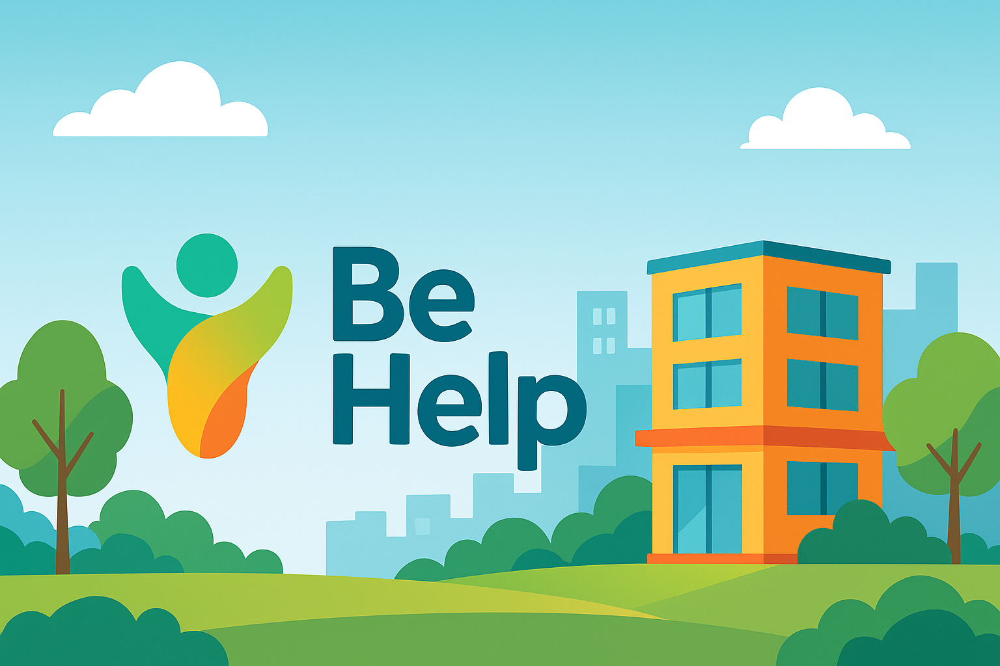
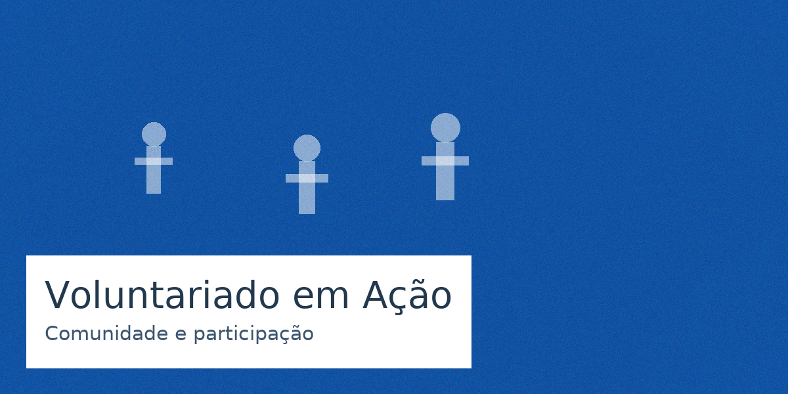

Nossa missão: potencializar comunidades
Atuamos em educação, saúde e inclusão, com transparência e impacto medido.

Sobre a ONG
Fundada em 2012, nossa ONG já atendeu milhares de pessoas por meio de projetos socioeducacionais.
- Equipe: 40 colaboradores
- Voluntários: rede com mais de 700 pessoas
- Relatórios de transparência disponíveis para download
